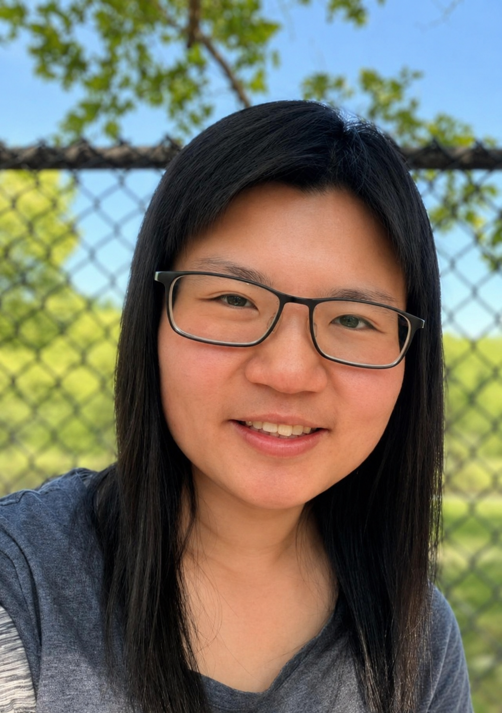

Research Interests
How do brains and artificial neural networks learn from experience, connect outcomes to relevant past events, and generalize to new situations?
We study the computational principles of learning in biological and artificial neural systems.
Learning poses a challenging credit-assignment problem: when an outcome arrives, the brain must determine which earlier events, actions, and neural activity contributed to it. It must also extract knowledge that generalizes beyond past experience. Understanding how biological systems solve these problems could reveal mechanisms underlying adaptive behavior, inspire new principles for biologically grounded AI, and ultimately help inform efforts to understand and treat learning impairments in neurodegenerative diseases. Across our research, we combine theory-driven and data-driven approaches to connect learning processes across synapses, neural circuits, and behavior.
We are also interested in how these principles extend to continual and naturalistic learning, where biological and artificial agents must learn over extended timescales, adapt to changing contexts, and interact continuously with their environments.
Ongoing projects
- Biologically grounded neural-network learning. Using mechanistic neural-network models, we study how biological ingredients, such as cell-type-specific neuromodulation, support credit assignment during ongoing experience with delayed outcomes. Related paper: Cell-type-specific neuromodulation guides synaptic credit assignment in a spiking neural network (PNAS, 2021)
- Mathematical theory of learning and generalization. We combine mathematical analysis and neural-network simulations to study how learning rules, architecture, and experience shape representations, generalization, and continual learning. Related paper: How connectivity structure shapes rich and lazy learning in neural circuits (ICLR, 2024)
- Characterizing learning rules from neural and behavioral data. We develop machine-learning methods to characterize and distinguish candidate learning processes using trial-by-trial behavioral data, high-dimensional neural data, or both. Related paper: Flexible inference for animal learning rules using neural networks (NeurIPS, 2025)
About

My full name is Yuhan Helena Liu, but I go by Helena. In January 2027, I will return to the University of Toronto, my alma mater, as an Assistant Professor in the Department of Psychology, specializing in AI for Psychological Sciences. I am currently a postdoctoral researcher at the Princeton Neuroscience Institute and Princeton's Center for Statistics and Machine Learning, working with Jonathan Pillow.
I received my PhD in Applied Mathematics from the University of Washington, where I was advised by Eric Shea-Brown and focused on computational neuroscience and NeuroAI. Before that, I completed my undergraduate training in Engineering Science and my master's degree at the University of Toronto. I have also held visiting research roles at Mila, MIT, and the Allen Institute.
My research has been recognized through national fellowships, invited talks, and four Rising Stars distinctions spanning EECS, data science, computational science, and engineering in health. My first-author work has appeared in PNAS, NeurIPS, ICLR, and ICML. I am also deeply committed to teaching and mentorship and received a departmental teaching award during my PhD. Outside research, I enjoy strength training, calisthenics, hiking, traveling, and birdwatching.
Recruiting graduate and undergraduate students
Join Us
Interested in machine learning and computational neuroscience?
Whether your background is in computer science, engineering, statistics, mathematics, physics, neuroscience, or psychology, you are welcome to apply.
I will be recruiting students who are curious, creative, and motivated, with the persistence to carry projects through. Some experience with scientific programming (ideally in Python) is expected, while familiarity with linear algebra, probability, or statistics would be helpful. Prior training in neuroscience or psychology is not required.
Interested students are encouraged to email me with their CV and a brief description of their research experience and interests. To be considered for graduate admission, students must also submit a formal application to the University of Toronto Psychology graduate program by the program’s application deadline.
Former Mentees
- Hanson Mo: Physics undergraduate; now a PhD student at Brown University. Paper: H. H. Mo, Y. H. Liu, E. Shea-Brown, and S. Mihalas (manuscript in preparation, 2026).
- Weixuan Liu: Computer Science undergraduate; now a graduate student at Carnegie Mellon University. Paper: W. Liu, X. Zhang, and Y. H. Liu (AAAI AI2ASE, 2025).
- Xinyue Zhang: Mathematics undergraduate; now a graduate student at Columbia University. Paper: W. Liu, X. Zhang, and Y. H. Liu (AAAI AI2ASE, 2025).